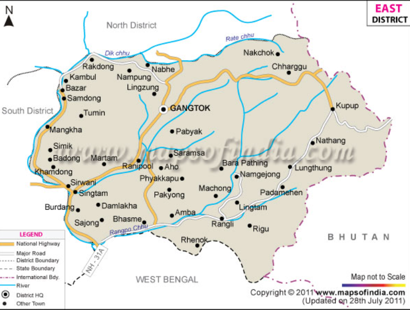

geography
districts:
east district:
The east district is the most populated with Gangtok being the main administrative and business centre.
Apart from the modern attractions of the capital town, in the east you will also find the beautiful Tsomgo
Lake, the historically important Nathula pass, as well as many monasteries and temples. Gangtok is the
capital of Sikkim and heart of all the business hubs.

west district:
West Sikkim is replete with history and religion.
This is where the first Chogyal of Sikkim was consecrated at Yuksum in 1642 and this is where some
of the holiest and most important monasteries of Sikkim were established, including Dubdi and Sanga
Choling, the first monasteries to be built in Sikkim. West Sikkim is beautiful terrain abounding in
lakes and waterfalls and also has great trekking routes. Gyalshing is the head quarter and town of
the West District.